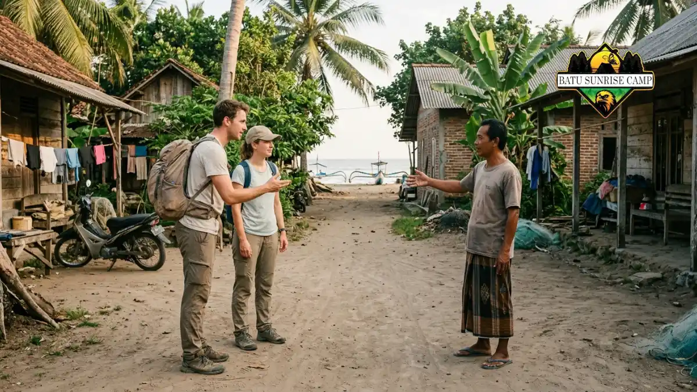

Cara menemukan lokasi camping pantai tersembunyi adalah menelusuri peta satelit, menanyakan warga setempat, memverifikasi akses dan izin, lalu mengecek pasang surut sebelum berangkat.
- Mulai dari peta satelit untuk mengenali teluk kecil, bukit pasir, dan jalur setapak.
- Cocokkan temuan peta dengan laporan pengunjung terbaru dan keterangan warga.
- Pastikan status lahan serta izin sebelum menetapkan lokasi.
- Cek pasang surut dan jalur keluar agar lokasi tidak berubah menjadi jebakan.
- Simpan peta offline karena sinyal di pantai terpencil sering tidak tersedia.
Bagaimana Membaca Peta Satelit untuk Mencari Pantai Sepi?
Peta satelit membantu mengenali pantai sepi dengan melihat teluk tertutup, jalur setapak, ketiadaan bangunan, dan area datar di belakang garis pasir.
Mulailah dengan memperbesar garis pantai di wilayah yang Anda minati. Cari teluk kecil di antara dua tanjung, karena bentuk ini sering menandakan perairan lebih tenang.
Perhatikan juga ada tidaknya jalan, atap bangunan, atau dermaga kecil yang menunjukkan aktivitas manusia.
Indonesia memiliki lebih dari 17.000 pulau menurut data pemerintah yang masih dirujuk pada 2026, sehingga pilihan titik pesisir sangat luas. Hal ini sekaligus berarti banyak pantai yang tidak pernah muncul di daftar wisata populer.
Perhatikan tanda ketinggian tanah. Area datar di belakang pasir lebih menjanjikan untuk tenda dibanding tebing curam.
Lalu gunakan fitur citra historis, bila tersedia, untuk melihat perubahan lebar pantai dari waktu ke waktu. Ingat bahwa citra satelit hanya petunjuk awal, bukan bukti kondisi terkini.
Di Mana Mencari Informasi Pendukung Selain Peta?
Informasi pendukung dapat dicari dari komunitas pendaki dan pecinta alam, unggahan pengunjung terbaru, forum perjalanan, serta kantor desa atau pengelola kawasan terdekat.
Komunitas pencinta alam biasanya menyimpan catatan rute, durasi trekking, dan kondisi musim. Tanyakan dengan sopan dan jelaskan rencana Anda secara jujur. Mereka lebih terbuka kepada pengunjung yang menunjukkan niat menjaga lingkungan.
Telusuri unggahan terbaru dan bandingkan beberapa sumber. Informasi yang berusia bertahun-tahun bisa tidak relevan, karena jalur longsor, pantai terkikis, atau lahan berpindah kepemilikan.
Catat juga pertanyaan penting yang belum terjawab: apakah ada sumber air, seberapa lebar pantai saat pasang, dan apakah ada sinyal seluler.
Daftar pertanyaan ini akan membimbing percakapan Anda dengan warga setempat atau pengelola di langkah berikutnya.
Bagaimana Cara Bertanya kepada Warga Lokal?
Bertanyalah dengan sopan kepada perangkat desa atau warga pesisir, jelaskan rencana menginap, dan tanyakan akses, pasang surut, keamanan, serta aturan setempat yang berlaku.

Berdiskusi santun dengan masyarakat pesisir memberikan kepastian rute evakuasi, pasang surut harian, serta izin wilayah sebelum mendirikan tenda.
Datangi desa terdekat sebelum menuju pantai. Perkenalkan diri, sebutkan jumlah rombongan, lama menginap, dan tujuan Anda.
Sikap terbuka membangun kepercayaan dan membuka peluang mendapat informasi yang tidak ada di internet.
Tanyakan hal-hal praktis: jalur mana yang aman, kapan air biasanya pasang, apakah ada ombak besar pada bulan tertentu, dan apakah ada area yang sakral atau dilarang. Warga nelayan biasanya sangat memahami pola gelombang dan arus.
Jika diminta kontribusi seperti biaya parkir, jasa pemandu, atau donasi kebersihan, pertimbangkan dengan wajar.
Dukungan kecil kepada ekonomi lokal membantu menjaga hubungan baik dan membuat warga lebih peduli terhadap pantai tersebut.
Bagaimana Memverifikasi Akses, Izin, dan Status Lahan?
Verifikasi dilakukan dengan menanyakan pemilik atau pengelola lahan, memeriksa apakah area termasuk kawasan konservasi, dan memastikan camping diperbolehkan sebelum mendirikan tenda.
Pesisir tidak selalu terbuka untuk umum. Beberapa area berada dalam kawasan konservasi, hutan lindung, atau lahan milik pribadi. Mendirikan tenda tanpa izin dapat berujung teguran, denda, atau pengusiran dari lokasi.
Hubungi pengelola kawasan atau kantor desa setempat untuk menanyakan ketentuan. Jika lokasi berada di kawasan konservasi, periksa informasi resmi dari pengelola kawasan terkait kuota pengunjung dan larangan aktivitas.
Simpan bukti izin, misalnya pesan tertulis atau tangkapan layar percakapan. Bila ada pertanyaan dari petugas, Anda dapat menunjukkan bukti tersebut. Bila izin tidak diberikan, cari alternatif lain daripada memaksakan kunjungan.
Apa Saja Tanda Pantai Tersembunyi yang Berisiko Tinggi?
Pantai berisiko tinggi ditandai jalur masuk yang hanya terbuka saat surut, tebing rapuh, ombak besar tanpa area terlindung, dan ketiadaan jalur keluar darurat.
Waspadai pantai yang sempit di antara tebing dan laut. Pada saat pasang, area seperti ini dapat tenggelam sepenuhnya sehingga rombongan terjebak.
Menurut NOAA, siklus pasang surut semi-harian berlangsung sekitar 12 jam 25 menit antara dua pasang tertinggi, sehingga jendela waktu aman bisa sangat terbatas.
Tanda berisiko lainnya adalah laporan pengunjung tentang arus kuat, bekas longsor, atau banyak sampah kayu dan rumput laut yang terdampar tinggi di pasir. Jejak sampah yang berada jauh di atas permukaan pantai menunjukkan seberapa tinggi air dapat naik.
Jika Anda ragu, tunda rencana. Pantai dengan akses sulit, tanpa sinyal, dan tanpa warga di dekatnya bukan pilihan ideal untuk pemula. Lebih baik memilih lokasi yang masih memiliki jalur kembali yang jelas.
Bagaimana Cara Menyiapkan Navigasi dan Rencana Perjalanan?
Siapkan peta offline, titik koordinat jalur masuk dan keluar, perkiraan waktu tempuh, serta jadwal pulang yang dibagikan kepada orang tepercaya sebelum berangkat.
Unduh peta wilayah saat masih memiliki sinyal. Tandai titik awal jalur, area datar untuk tenda, sumber air yang diketahui, dan jalur alternatif.
Bawa kompas atau aplikasi navigasi dengan baterai cadangan karena sinyal pantai terpencil tidak bisa diandalkan.
Hitung waktu tempuh dengan margin. Jalur yang tampak singkat di peta dapat memakan waktu lebih lama karena medan berpasir, bebatuan, atau vegetasi lebat. Targetkan tiba sebelum gelap agar bisa memilih titik tenda dengan jelas.
Kirimkan rencana perjalanan kepada keluarga atau teman, lengkap dengan perkiraan jam kembali.
Jika tidak ada kabar dalam batas waktu yang disepakati, mereka tahu kapan harus menghubungi bantuan. Persiapan lengkap barang bawaan dibahas di panduan perlengkapan camping di pantai.
Bagaimana Mengunjungi Lokasi Tanpa Merusaknya?
Kunjungi dengan rombongan kecil, hindari membagikan titik presisi secara luas, dan terapkan Leave No Trace agar pantai tetap lestari dan tidak kelebihan pengunjung.
Rombongan besar meninggalkan dampak lebih besar pada vegetasi, satwa, dan kebersihan. Batasi jumlah peserta sesuai kapasitas area dan kemampuan membawa pulang sampah.
Pertimbangkan cara membagikan pengalaman. Anda dapat bercerita tentang pengalaman dan pelajaran tanpa menyebut titik tepat, atau menyarankan pembaca bertanya ke warga setempat. Tindakan ini mencegah lonjakan pengunjung mendadak.
Sebelum meninggalkan lokasi, periksa area tenda, bawa semua sampah termasuk milik pengunjung lain bila memungkinkan, dan ratakan bekas galian. Panduan menyeluruh tentang etika dan pilihan lokasi tersedia di panduan memilih lokasi camping pantai tersembunyi dan menyiapkannya.
Kesimpulan
Menemukan pantai sepi yang layak untuk berkemah memerlukan kombinasi riset digital dan verifikasi lapangan. Mulai dari peta satelit, gali informasi dari warga, pastikan izin, lalu cek pasang surut dan jalur keluar.
Simpan peta offline, bagikan rencana perjalanan, dan kunjungi dengan rombongan kecil. Dengan begitu, Anda mendapat pengalaman camping yang aman sekaligus ikut menjaga pantai tetap lestari.

Pertanyaan Umum (FAQ)